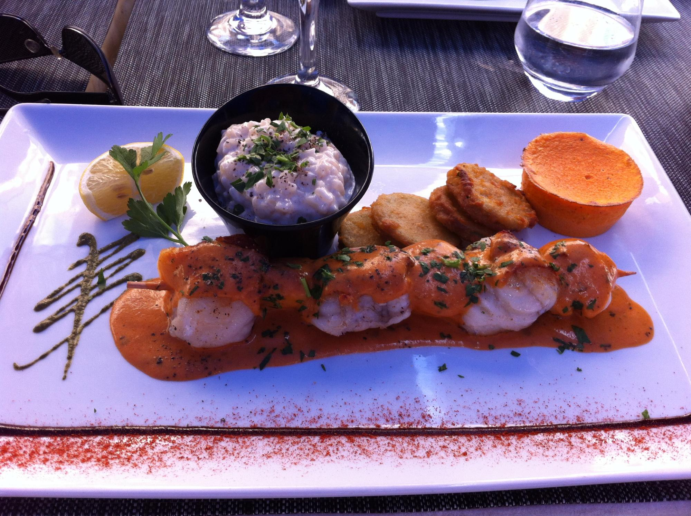
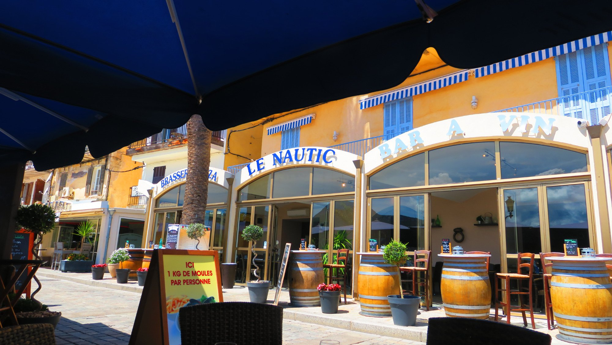
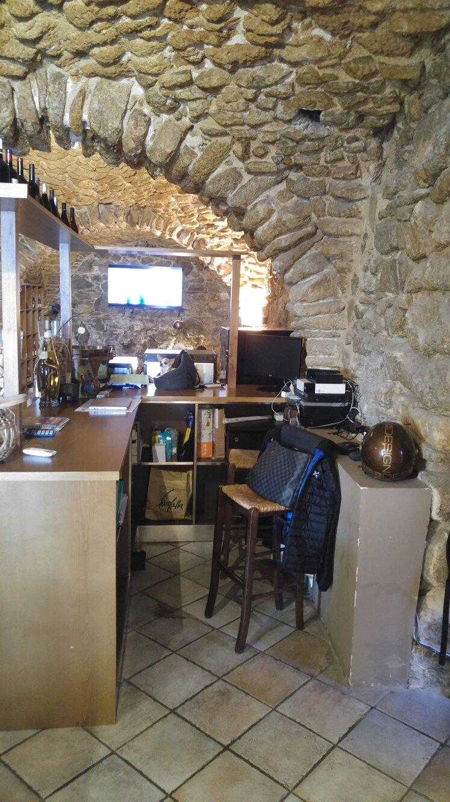
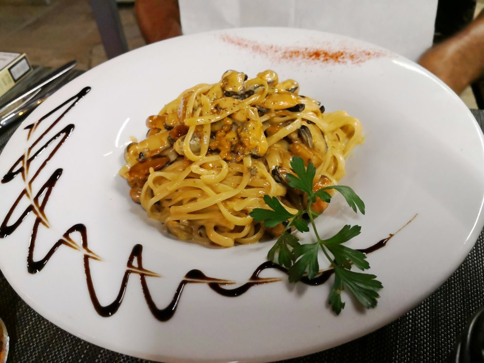

N° 01
Moules marinières
Classique de quai, servies avec leurs frites maison. Généreuses, bien nettoyées, jus court au vin blanc et persil.
16€
Escale n°01 · Port de Calvi. Depuis le quai, face à la citadelle.
Nous accostons Quai Adolphe Landry, au cœur du port de plaisance de Calvi. Sous les remparts génois, la maison ouvre ses tables toute l'année, midi et soir, pour une cuisine de mer simple et généreuse. Les bateaux tanguent à deux pas, la pierre blonde de la citadelle s'allume au couchant, et l'on s'installe comme si l'on rentrait à quai.

Sous les remparts génois, la table est dressée.
Classique de quai, servies avec leurs frites maison. Généreuses, bien nettoyées, jus court au vin blanc et persil.
Notre version insulaire : tomate, ail, herbes du maquis, pointe d'apéritif du Cap. Un plat régulièrement cité dans les avis.
Risotto crémeux, gambas juste saisies, zeste de citron de Corse. Notre plat le plus photographié de la saison.
Farcis maison, mijotés en sauce tomate parfumée. Une recette familiale que l'on sert toute l'année.
Selon l'arrivage du port. Cuisson sur la peau, huile d'olive de Balagne, citron. Pièce entière, prix selon la taille.
Carte indicative · 20 à 30€ par personne · Tarifs susceptibles d'évoluer selon l'arrivage.
La terrasse donne plein ouest sur le port. On déjeune au soleil, on dîne au couchant. Les voiliers rentrent, les lumières de la citadelle s'allument, et le service reste calme et attentionné même en pleine saison.

| Relevé | Valeur | Note |
|---|---|---|
| Haute saison | Juin à septembre, terrasse complète midi et soir | |
| Basse saison | Octobre à mai, salle intérieure chauffée, ouvert 7/7 | |
| Note de quai | 4,3 / 5 sur 1 042 AVIS GOOGLE | |
| Pavillon | Ouvert 7/7 · Midi 12h00 à 14h30 · Soir 18h00 à 23h00 |

« Magnifique cadre, soleil et nourriture au top. Personnel attentionné et efficace même en période chargée. »

« Moules marinières et moules Cap Corse excellentes, desserts au top, service rapide et souriant. Superbe emplacement sur le port. »
Quai Adolphe Landry
20260 Calvi, Haute-Corse